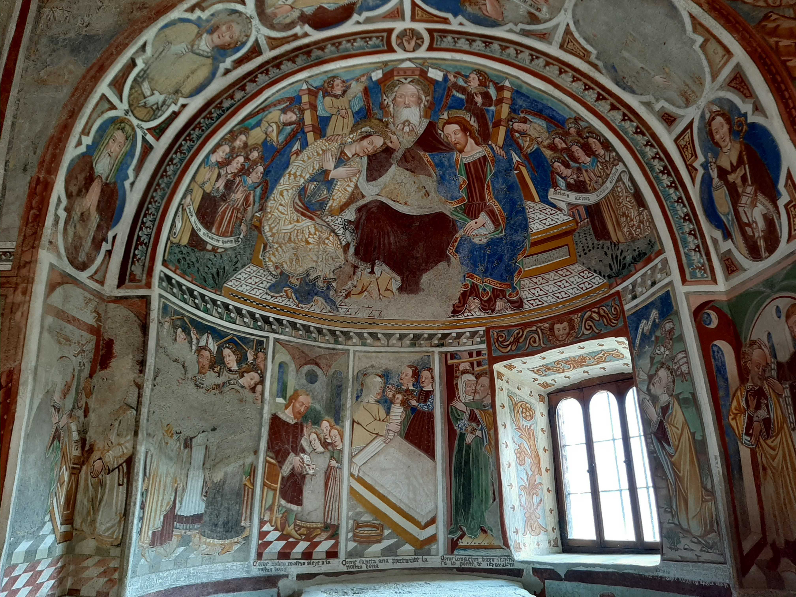

Die in der Ortschaft Prugiasco (heute Gemeinde Acquarossa) gelegene romanische Kirche befindet sich am westlichen Hang des Bleniotals und ist zu Fuss über eine geschwungene Hängebrücke von Leontica aus zu erreichen. Obwohl heute klar abseits der Hauptverkehrsadern des Tals gelegen, führte hier der Saumweg vorbei, der über den Narapass die Leventina mit dem Bleniotal verband und damit eine schnellere Verbindung zwischen Lukmanier- und Gotthardpass ermöglichte. Der mit dem Regional- und Fernhandel einhergegangene Wohlstand einzelner Mitglieder der Ortschaft dürfte bei den baulichen Erweiterungen und der malerischen Ausstattung des Kirchenraums (für die die Kirche bis heute bekannt ist) entscheidend mitgewirkt haben. Gleichzeitig ist die Bedeutung dieses Kirchenbaus eng an die politische und kirchliche Geschichte der beiden Täler gebunden, wobei Prugiasco politisch bis 1798 zur Leventina gehörte und einen Vorposten im Bleniotal bildete. Seit dem frühen Mittelalter standen die zwei Täler unter direktem Einfluss Mailands – zunächst unter der Herrschaft des Mailänder Domkapitels und ab dem 14. Jahrhundert zumindest in politischer Hinsicht unter der Kontrolle der grossen Mailänder Herzogsfamilien Visconti und Sforza. Dabei blieb Prugiasco auch nach der Eingliederung des Tessins in das politische Herrschaftsgebiet der Eidgenossenschaft und nach der (abermals späteren) kirchlichen Ausgliederung der zwei Täler aus der Mailänder Erzdiözese Teil einer ambrosianischen Exklave, die bis heute das kirchliche Leben der Region prägt. Von dieser abwechslungsreichen Vergangenheit zeugen einerseits die Präsenz des Mailänder Hauptheiligen Ambrosius im (ehemaligen) Patrozinium und daher auch im Bildprogramm des Kirchenraums und andererseits das überlebensgrosse Urner Wappen an der östlichen Wand des Kirchenturms – vermutlich zu einer Zeit kurz vor 1500 angebracht, als die Ortschaft nicht nur die Talgrenze, sondern auch die zwischen Eidgenossenschaft und Herzogtum Mailand markierte.
Zur Baugeschichte
Die Kirche besteht aus zwei miteinander verbundenen Apsidensälen, halbrunde überwölbte Chorräume, und repräsentiert somit einen Bautypus, der auch für andere romanische Kirchen der Region bezeugt ist (Sant´ Ambrogio in Chironico, San Remigio in Corzoneso). Dabei ist sie in mindestens zwei unterschiedlichen Bauphasen entstanden: Während der nördliche Apsidensaal auf das 11. Jahrhundert zurückgeht und im Laufe des 12. Jahrhunderts mit einer neuen Apsis versehen wurde, wurde zu einer nicht näheren bestimmbaren Zeit (wohl aber vor 1300) ein weiterer, deutlich schmalerer Apsidensaal im Süden angebaut, an dessen Seitenwand auch eine Eingangstür angebracht wurde. Wahrscheinlich noch im 12. Jahrhundert wurde auf der Nordseite der Kirchturm errichtet, während um 1600 die in Richtung Süden hinzugefügte Sakristei fertiggestellt wurde – in Umsetzung von Auflagen aus der (im Sinne der katholischen Reform durchgeführten) Pastoralvisite des Mailänder Erzbischofes Karl Borromäus (1538–1584), dessen Patrozinium die Kirche heute trägt. Nicht mehr zu sehen ist hingegen ein wohl an der Westwand angebrachter und in den Urkunden bezeugter Portikus, eine Säulenhalle, die mit der Ausübung von zivilen Amtshandlungen verbunden war.
Die romanische Kirche Sant´Ambrogio vecchio in Prugiasco (San Carlo di Negrentino). Ansicht von Südwesten. (Bild: Jonathan Stutz)
Bereits in der zweiten Hälfte des 12. Jahrhunderts wurde der ältere Apsidensaal mit einem romanischen Freskenzyklus überzogen, der heute vor allem an der Westwand sichtbar ist. Auf die Zeit zwischen der zweiten Hälfte des 15. und den ersten Jahren des 16. Jahrhunderts hingegen gehen die Freskenzyklen im spätgotischen Stil zurück, die heute den grössten Teil der Seitenwände und der zwei Apsiden schmücken. Durch die Überlagerung der unterschiedlichen Bildprogramme kommt es dabei zu einer Interaktion von bildlichen Elementen, die sich sowohl an den theologischen Inhalten der christlichen Heilsgeschichte orientieren und somit das liturgische Leben der Gesamtgemeinde im Blick hatten als auch mit solchen, die den Frömmigkeitsgeschmack der Zeit bedient haben. Nachdem die Kirche nach 1700 an Bedeutung verlor und sich allmählich in einem Zustand der Verlassenheit befand, führte das ab dem 19. Jahrhundert neu aufkommende Interesse an der kunstgeschichtlichen Bedeutung der Kirche zu wiederholten Restaurierungsmassnahmen, die bis in die jüngste Zeit zur Stabilisierung der Struktur und Wiederherstellung der leuchtenden Farbpracht der Wandmalereien beigetragen haben.
Bildprogramme
Während von der ursprünglichen romanischen Bemalung vor allem die an der westlichen Fassade angebrachte Darstellung der Parusie, der Wiederkunft Christi am Jüngsten Tag, erhalten geblieben ist, sind auch an den anderen Wänden Reste einer romanischen Malschicht erkennbar. Dies lässt ein den gesamten Kirchenraum überziehendes Bildprogramm vermuten. Bezeichnend für die Kunstformen der Zeit ist zum einen der Mäanderfries mit unterschiedlichen Dekorationen am obersten Register. Für heutige Besucher:innen sticht die grossflächige Parusie-Szene aber vor allem durch ihre byzantinisierenden Elemente wie zum Beispiel die kreisförmige Mandorla ins Auge (oberhalb des noch sichtbaren Türsturzes des ehemaligen Einganges). Während Versuche, die unterhalb der Apostelreihe nur noch fragmentarisch erkennbare Höllenszene näher zu deuten, unsicher bleiben müssen, wird jedenfalls klar, dass der erscheinenden Christusfigur die Funktion als Weltenrichter zukommt. Die Platzierung einer Weltgerichtszene an der Westwand einer Kirche und die Wahl einzelner Motive, so etwa die Darstellung des Höllenrachens als Monstergesicht mit verschluckter Menschenseele, sind jedenfalls für die romanische Kunst nicht unüblich und lassen sich auch in der Region belegen – so zum Beispiel an der westlichen Wand in der Kirche San Lorenzo in Lugano.
Die Parusie, die Wiederkunft Christi am Jüngsten Tag, an der nördlichen Westwand. (Bild: Jonathan Stutz)
Deutlich besser und in grösserer Zahl sind dagegen die Malereien aus der
spätgotischen bzw. frühen Renaissancezeit erhalten geblieben. In deren
Bilder sind dabei nicht nur die mit dem Gottesdienst verbundenen
theologischen Inhalte vertreten (vor allem die Christusdarstellung in
der nördlichen Apsis), sondern auch die Frömmigkeit einzelner
Auftraggeber, die entweder selbst kniend abgebildet oder in der
jeweiligen Bildunterschrift namentlich erwähnt werden. Zum Teil können
diese mit politischen Entscheidungsträgern des Tals in den bewegten
Jahren der militärischen Auseinandersetzung zwischen der
Eidgenossenschaft und Mailand identifiziert werden.
Die Werkstatt von Nicolao und Cristoforo da Seregno, auch
Seregnesi genannt, (Ersterwähnung 1448) ist dabei vor allem im
nördlichen Schiff vertreten, in dessen Apsis die Darstellung Christi als
Weltenherrscher über dem Altarraum thront. Umrahmt von der allegorischen
Evangelistendarstellung in der Kalotte (die Wölbung der Apsis) und der
alttestamentlichen Propheten in der Laibung des Triumphbogens verweist
diese Szene auf die Wortverkündigung im Gottesdienst und nimmt somit die
gesamte versammelte Gemeinde in den Blick. Einen aussagekräftigen
Einblick in die Frömmigkeit der Zeit gibt dabei vor allem die an die
Seregnesi in Auftrag gegebene Darstellung des Schmerzensmanns in der
Lünette oberhalb des südlichen Eingangstors. Die zwischen Lünette und
Türsturz angebrachte Gebetsinschrift zur Erlangung der Ablassgnade
(bestehend aus Papst Gregor dem Grossen zugeschriebenen Gebetsformeln)
ist dabei nicht nur für die spätmittelalterliche Ablassfrömmigkeit
bezeichnend, sondern weist auch auf die zugeschriebene Wirkkraft von
Bildern in Zusammenspiel mit Gebetstexten hin, wie es auch prominent am
Schmerzensmann in der Kirche Santa Maria degli Angeli in Lugano bezeugt
ist.
Nördliche Apsis mit Majestas Domini und Evangelistensymbolen. (Bild: Jonathan Stutz)
Südliche Apsis mit Szenen aus dem Leben Marias. (Bild: Jonathan Stutz)
Ganz im Sinne der verstärkten Marienfrömmigkeit des 15. Jahrhunderts
lässt sich hingegen die bildliche Ausstattung der südlichen Apside
lesen, deren Ausführung von der Werkstatt des Antonio da Tradate
(1465–1511) verantwortet wurde und die sich sowohl in der Anfertigung
mehrerer in Auftrag gegebener Madonnen mit Kind an der Südwand sowie in
der bildlichen Umsetzung der Kindheitsgeschichte Marias an der Apsiswand
(unterhalb der Krönung Marias in der Apsiskalotte) äussert. Einen
suggestiven Hinweis auf die sich anbahnenden Kriege um die Herrschaft
über Mailand jener Jahre (in die auch die Eidgenossenschaft
hineingezogen werden sollte) gibt vermutlich auch eine an der Westwand
angebrachte Darstellung der legendarisch angereicherten Schlacht von
Parabiago (1339), in welcher Ambrosius zu Pferd reitend und zusammen mit
den Märtyrern Gervasius und Protasius in den Brüderkrieg eingreift und
die rebellischen Streitkräfte besiegt.
Es ist gerade die Vielschichtigkeit, die diese Kirche theologisch
und historisch bedeutsam macht: Als Grenzort, der Täler miteinander
verbunden hat und im Spannungsfeld zwischen Mailand und der
Eidgenossenschaft stand; und als Gebäude, an dem die Spuren der
politischen und kirchlichen Veränderungen sichtbar geblieben sind. Dabei
sind gerade die verschiedenen Bildprogramme nicht nur Ausdruck
kunsthistorischer Entwicklungen, sondern verbinden Elemente der
theologisch-christlichen Heilsgeschichte und zeitgenössische
Frömmigkeitsästhetik mit der bewegten Geschichte der Talbevölkerung.
Westwand des südlichen Kirchenschiffs mit Ambrosius, Gervasius und Protasius. (Bild: Jonathan Stutz)
Jonathan Stutz ist wissenschaftlicher Assistent bei der Ludwig-Maximilians-Universität München, Evangelisch-Theologische Fakultät, Abteilung für Kirchengeschichte
Weitere Artikel von {{ author.author }} finden Sie hier:
Zur Vertiefung:
- Mollisi, Giorgio (Hg.): «La Chiesa di Sant`Ambrogio vecchio a Negrentino di Prugiasco», Sonderausgabe der Zeitschrift Arte e Cultura, Nr. 15 (Jahrgang 5), Pregassona-Lugano 2020.
- Brenk, Beat: Die romanische Wandmalerei in der Schweiz, Bern 1963.
- Ostinelli, Paolo und Giuseppe Chiesi (Hgg.): Storia del Ticino, Bd. 1: Antichità e Medioevo, Bellinzona 2015, 153–155, 487–492 und 499–509.
- Rahn, Johann Rudolf: I monumenti artistici del medio evo nel Cantone Ticino, traduzione di Eligio Pometta, Bellinzona 1894, 256–258.